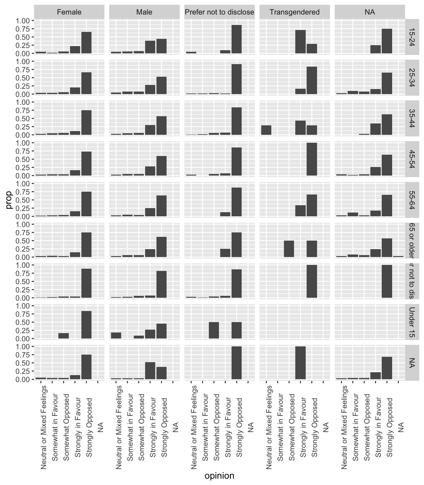
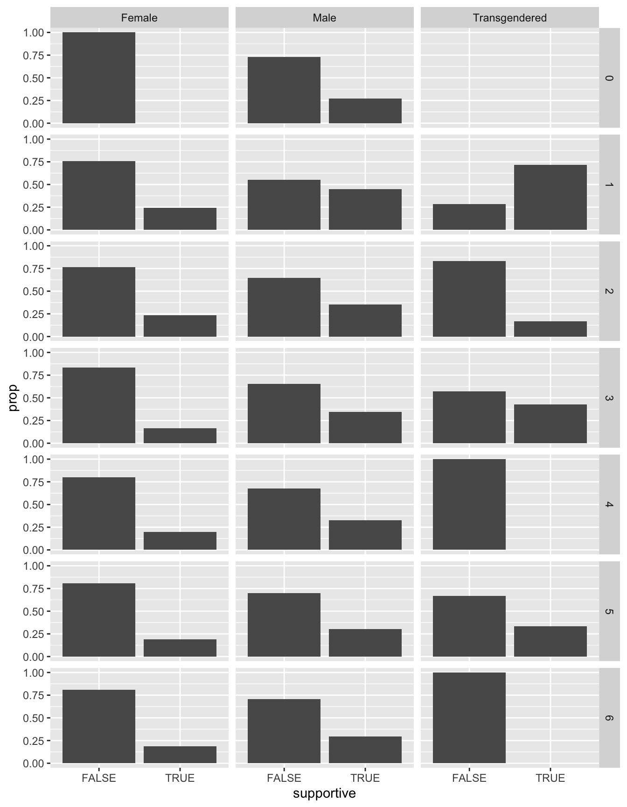

14 Case study - Opinions about a casino in Toronto
This was written by Michael Chong.
14.1 Data preparation
14.1.1 Getting data from opendatatoronto
Here we use the opendatatoronto package again. See the previous example RMarkdown file for a deeper explanation of how the code below works.
The dataset I’m extracting below are the results from a survey in 2012 regarding the establishment of a casino in Toronto. More info available by following this link. In this analysis, we’ll be hoping to address the question, which demographic (age/gender) groups are more likely to be supportive of a new casino in Toronto?
# Get the data
casino_resource <- search_packages("casino survey")%>%
list_package_resources() %>%
filter(name == "toronto-casino-survey-results") %>%
get_resource()## New names:
## * `` -> ...93
## * `` -> ...9414.1.2 Getting the right kind of object
The object casino_resource isn’t quite useable yet, because it’s (inconveniently) stored as a list of 2 data frames:
## [1] "list"If we just return the object, we can see that the 2nd list item is empty, and we just want to keep the first one:
## $tblSurvey
## # A tibble: 17,766 x 94
## SurveyID Q1_A Q1_B1 Q1_B2 Q1_B3 Q2_A Q2_B Q3_A Q3_B Q3_C Q3_D Q3_E
## <dbl> <chr> <chr> <chr> <chr> <chr> <chr> <chr> <chr> <chr> <chr> <chr>
## 1 1 Stro… Do n… Do n… Do n… Does… "As … Not … Very… Not … Not … Not …
## 2 2 Stro… Econ… Jobs Arts… Fits… "Cos… Very… Very… Very… Very… Very…
## 3 3 Stro… Ther… If t… <NA> Fits… "Big… Very… Very… Very… Very… Very…
## 4 4 Some… beli… mone… evid… Does… "My … Very… Very… Some… Some… Very…
## 5 5 Neut… Like… Conc… <NA> Neut… "Aga… Very… Very… Very… Not … Very…
## 6 6 Stro… have… <NA> <NA> Does… "Tor… Not … Not … Not … Not … Not …
## 7 7 Stro… The … Peop… We s… Does… "#3 … Not … Not … Not … Not … Not …
## 8 8 Stro… It w… Mora… <NA> Does… "Cas… Very… Very… Very… Very… Very…
## 9 9 Stro… It's… traf… heal… Does… "No … Not … Very… Not … Not … Some…
## 10 10 Stro… Toro… Avoi… Prov… Fits… "Tor… Very… Very… Very… Not … Very…
## # … with 17,756 more rows, and 82 more variables: Q3_F <chr>, Q3_G <chr>,
## # Q3_H <chr>, Q3_I <chr>, Q3_J <chr>, Q3_K <chr>, Q3_L <chr>, Q3_M <chr>,
## # Q3_N <chr>, Q3_O <chr>, Q3_P <chr>, Q3_Q <chr>, Q3_Q_Other <chr>,
## # Q3_Comments <chr>, Q4_A <chr>, Q5 <chr>, Q6 <chr>, Q6_Comments <chr>,
## # Q7_A_StandAlone <chr>, Q7_A_Integrated <chr>, Q7_A1 <chr>, Q7_A2 <chr>,
## # Q7_A3 <chr>, Q7_A_A <chr>, Q7_A_B <chr>, Q7_A_C <chr>, Q7_A_D <chr>,
## # Q7_A_E <chr>, Q7_A_F <chr>, Q7_A_G <chr>, Q7_A_H <chr>, Q7_A_I <chr>,
## # Q7_A_J <chr>, Q7_A_J_Other <chr>, Q7_B_StandAlone <chr>,
## # Q7_B_Integrated <chr>, Q7_B1 <chr>, Q7_B2 <chr>, Q7_B3 <chr>, Q7_B_A <chr>,
## # Q7_B_B <chr>, Q7_B_C <chr>, Q7_B_D <chr>, Q7_B_E <chr>, Q7_B_F <chr>,
## # Q7_B_G <chr>, Q7_B_H <chr>, Q7_B_I <chr>, Q7_B_J <chr>, Q7_B_J_Other <chr>,
## # Q7_C_StandAlone <chr>, Q7_C_Integrated <chr>, Q7_C1 <chr>, Q7_C2 <chr>,
## # Q7_C3 <chr>, Q7_C_A <chr>, Q7_C_B <chr>, Q7_C_C <chr>, Q7_C_D <chr>,
## # Q7_C_E <chr>, Q7_C_F <chr>, Q7_C_G <chr>, Q7_C_H <chr>, Q7_C_I <chr>,
## # Q7_C_J <chr>, Q7_C_J_Other <chr>, Q8_A1 <chr>, Q8_A2 <chr>, Q8_B1 <chr>,
## # Q8_B2 <chr>, Q8_B3 <chr>, Q9 <chr>, Q9_Considerations <chr>, Q10 <chr>,
## # Q11 <chr>, Age <chr>, Gender <chr>, PostalCode <chr>, GroupName <chr>,
## # DateCreated <dttm>, ...93 <lgl>, ...94 <lgl>
##
## $Sheet1
## # A tibble: 0 x 0So, let’s only keep the first item by indexing the list with double square brackets:
14.1.3 Cleaning up the dataframe
Let’s check out what the first couple rows of the dataframe looks like. By default, head() returns the first 6 rows:
| SurveyID | Q1_A | Q1_B1 | Q1_B2 | Q1_B3 | Q2_A | Q2_B | Q3_A | Q3_B | Q3_C | Q3_D | Q3_E | Q3_F | Q3_G | Q3_H | Q3_I | Q3_J | Q3_K | Q3_L | Q3_M | Q3_N | Q3_O | Q3_P | Q3_Q | Q3_Q_Other | Q3_Comments | Q4_A | Q5 | Q6 | Q6_Comments | Q7_A_StandAlone | Q7_A_Integrated | Q7_A1 | Q7_A2 | Q7_A3 | Q7_A_A | Q7_A_B | Q7_A_C | Q7_A_D | Q7_A_E | Q7_A_F | Q7_A_G | Q7_A_H | Q7_A_I | Q7_A_J | Q7_A_J_Other | Q7_B_StandAlone | Q7_B_Integrated | Q7_B1 | Q7_B2 | Q7_B3 | Q7_B_A | Q7_B_B | Q7_B_C | Q7_B_D | Q7_B_E | Q7_B_F | Q7_B_G | Q7_B_H | Q7_B_I | Q7_B_J | Q7_B_J_Other | Q7_C_StandAlone | Q7_C_Integrated | Q7_C1 | Q7_C2 | Q7_C3 | Q7_C_A | Q7_C_B | Q7_C_C | Q7_C_D | Q7_C_E | Q7_C_F | Q7_C_G | Q7_C_H | Q7_C_I | Q7_C_J | Q7_C_J_Other | Q8_A1 | Q8_A2 | Q8_B1 | Q8_B2 | Q8_B3 | Q9 | Q9_Considerations | Q10 | Q11 | Age | Gender | PostalCode | GroupName | DateCreated | ...93 | ...94 |
| 1 | Strongly Opposed | Do not want to promote irresponsible gambling for local community and think casino's increase income inequality | Do not want to promote Toronto as a city based on irresponsible gambling - risk City becomes reliant on casino income and short term financial benefits rather than long term negative social impact | Do not think the City of Toronto will manage the casino and potential impact properly, any benefits will be lost to managing company of the casino | Does Not Fit My Image At All | As above. Will increase inequality | Not Important At All | Very Important | Not Important At All | Not Important At All | Not Important At All | Not Important At All | Very Important | Very Important | Very Important | Not Important At All | Not Important At All | Very Important | Very Important | Not Important At All | Very Important | Very Important | No | I do not support a new casino under any conditions | Neither | As above. | Strongly Unsuitable | Strongly Unsuitable | T | F | F | F | F | F | F | F | F | F | Strongly Unsuitable | Strongly Unsuitable | T | F | F | F | F | F | F | F | F | F | Strongly Unsuitable | Strongly Unsuitable | T | F | F | F | F | F | F | F | F | F | Strongly Unsuitable | Strongly Unsuitable | T | Individual | 25-34 | Male | 2013-01-03 15:15:00 | FALSE | |||||||||||||||||||||||
| 2 | Strongly in Favour | Economic Development | Jobs | Arts and Culture | Fits Image Perfectly | Cosmopolitan City With Much to Offer Tourists. | Very Important | Very Important | Very Important | Very Important | Very Important | Somewhat Important | Somewhat Important | Somewhat Important | Very Important | Very Important | Somewhat Important | Very Important | Very Important | Very Important | Somewhat Important | Very Important | Yes | $50 million | City of Toronto | We might as well get benefits. | Strongly Unsuitable | Highly Suitable | Creates a destination | More jobs | F | F | T | T | T | T | T | T | T | F | Spa | Strongly Unsuitable | Highly Suitable | Transit Access | Lots of space | F | F | T | T | T | T | T | T | T | F | Somewhat Unsuitable | Somewhat Unsuitable | Limited transit access for tourists or workers | F | F | T | T | T | T | T | T | T | F | Neutral or Mixed Feelings | Neutral or Mixed Feelings | F | High Green Standards. Unionized workforce. | Address the social issues that exist, don't bury your heads in the sand by thinking that problem gaming doesn't exist because there isn't a casino downtown. It does. Deal with it. Also use this as an opportunity to fix infrastructure not just waste more money on studying it. | Individual | 35-44 | Female | M5H | 2013-01-03 15:16:00 | |||||||||||||||
| 3 | Strongly in Favour | There are allready a number of close by casinos | If toronto is not selected then another close by municipality will get one | Fits Image Perfectly | Big cities have casinos | Very Important | Very Important | Very Important | Very Important | Very Important | Very Important | Somewhat Important | Not Important At All | Somewhat Important | Very Important | Very Important | Very Important | Very Important | Very Important | Somewhat Important | Very Important | Yes | I don't know | City of Toronto | Toronto is identifiable. During travels I often meet people that identify family or friends as being from toronto but they actually are from the surrounding municipalities | Neutral or Mixed Feelings | Highly Suitable | F | F | T | T | T | T | T | T | T | F | Neutral or Mixed Feelings | Highly Suitable | F | F | T | T | T | T | T | T | T | F | Neutral or Mixed Feelings | Highly Suitable | F | F | T | T | T | T | T | T | T | F | Somewhat Suitable | Neutral or Mixed Feelings | F | Individual | 55-64 | Male | m6s | 2013-01-03 15:17:00 | ||||||||||||||||||||||||
| 4 | Somewhat Opposed | believe casino will decrease quality of life | money not worth the bad reputation that casino brings | evidence from other cities (Thunder Bay, Windsor) suggests it does more harm than good to a city | Does Not Fit My Image At All | My image of the City of Toronto is vibrant, wonderful, progressive and as a "city of the future." A casino represents the opposite - as a city on decline and increased crime, health concerns and public safety. | Very Important | Very Important | Somewhat Important | Somewhat Important | Very Important | Somewhat Important | Very Important | Very Important | Very Important | Somewhat Important | Somewhat Important | Somewhat Important | Very Important | Somewhat Important | Somewhat Important | Somewhat Important | No | I do not support a new casino under any conditions | Adjacent Municipality | There may be a place for a casino where it serves the community well - the casino in Orillia is one example. Perhaps an adjacent municipality would be a good place. Perhaps not, but it should be considered. | Strongly Unsuitable | Somewhat Unsuitable | downtown is too vibrant | would bring too much crime, depressed public health | revenue would never be worth negative concerns | T | F | T | T | T | F | T | T | T | F | Strongly Unsuitable | Somewhat Unsuitable | Exhibition Place does not need this negative attention | Would bring too many people to an area poorly served by public transit | nearby areas (ex: Parkdale) would be especially hard hit | T | F | T | T | T | T | T | T | T | F | Strongly Unsuitable | Somewhat Unsuitable | Too much crime, public health concerns | area needs positive, not negative developments | T | F | T | T | T | F | T | T | T | F | Somewhat Suitable | Neutral or Mixed Feelings | T | Individual | 25-34 | Male | M5R | 2013-01-03 15:17:00 | |||||||||||||||
| 5 | Neutral or Mixed Feelings | Like the employment opportunities it will bring | Concerned about it being tacky, or an eye-sore in the city | Neutral / I am Not Sure | Again, concerned about it being tacky, or an eye-sore. Great care needs to be taken in the design of the facility if it goes ahead. | Very Important | Very Important | Very Important | Not Important At All | Very Important | Not Important At All | Unsure | Unsure | Somewhat Important | Somewhat Important | Somewhat Important | Somewhat Important | Somewhat Important | Somewhat Important | Very Important | Somewhat Important | No | I don't know | Adjacent Municipality | I think it makes more sense in an adjacent municipality. More space! Downtown Toronto is too crowded as it is! | Strongly Unsuitable | Strongly Unsuitable | Too conjested already | F | F | F | T | F | F | F | F | T | F | Neutral or Mixed Feelings | Somewhat Suitable | Exhibition place seems to me the only place downtown where a casino would be suitable. Already a tourist attraction, and a casino would fit well with the current attractions already there. | F | F | T | T | F | F | T | F | T | F | Strongly Unsuitable | Strongly Unsuitable | The Port Lands already has a plan in place and I don't beleive a casino fits with the current vision. | T | F | F | F | F | F | F | F | F | F | Neutral or Mixed Feelings | Highly Suitable | Already have gambling there | F | Individual | 25-34 | Female | M6N | 2013-01-03 15:18:00 | ||||||||||||||||||||
| 6 | Strongly Opposed | have experience with the addictions problems related to gambling..the drug use, suicides through my work as a social worker and spiritual care professional | Does Not Fit My Image At All | Toronto the Good....let's not contribute to health problems, addictions and suicides | Not Important At All | Not Important At All | Not Important At All | Not Important At All | Not Important At All | Not Important At All | Very Important | Not Important At All | Not Important At All | Not Important At All | Not Important At All | Not Important At All | Not Important At All | Not Important At All | Very Important | Not Important At All | Not Important At All | major issues of public health and safety related to problem gambling...if one doesn't start out "problem" gambling...that is a always a result | No | I do not support a new casino under any conditions | Neither | because of the health and safety issues gambling would create | Strongly Unsuitable | Strongly Unsuitable | T | F | F | F | F | F | F | F | F | F | Strongly Unsuitable | Strongly Unsuitable | T | F | F | F | F | F | F | F | F | F | Strongly Unsuitable | Strongly Unsuitable | T | F | F | F | F | F | F | F | F | F | Somewhat Suitable | Somewhat Suitable | it exists already...go with it | T | Please...vote against this | Individual | 45-54 | Female | m6p | 2013-01-03 15:26:00 |
Unfortunately the column names aren’t very informative. For simplicity, we’ll use the .pdf questionnaire that accompanies this dataset from the Toronto Open Data website. Alternatively, we could get and parse the readme through the R package.
Here’s a link to the questionnaire.
Question 1 indicates the level of support for a casino in Toronto. We’ll use this as the response variable.
Concerning potential predictor variables, most of the questions ask respondents about their opinions on different aspects of a potential casino development, which aren’t particularly useful towards our cause. The only demographic variables are Age and Gender, so let’s choose these.
Here I’m also going to rename the columns so that my resulting data frame has columns opinion, age, and gender.
# Narrow down the dataframe to our variables of interest
casino_data <- casino_data %>%
select(Q1_A, Age, Gender) %>%
rename(opinion = Q1_A, age = Age, gender = Gender)
# Look at first couple rows:
head(casino_data)| opinion | age | gender |
| Strongly Opposed | 25-34 | Male |
| Strongly in Favour | 35-44 | Female |
| Strongly in Favour | 55-64 | Male |
| Somewhat Opposed | 25-34 | Male |
| Neutral or Mixed Feelings | 25-34 | Female |
| Strongly Opposed | 45-54 | Female |
14.2 Some visual exploration (and more cleanup, of course)
Let’s first do some quick exploration to get a feel for what’s going on in the data. We’ll first calculate proportions of casino support for each age-gender combination:
# Calculate proportions
casino_summary <- casino_data %>%
group_by(age, gender, opinion) %>%
summarise(n = n()) %>% # Count the number in each group and response
group_by(age, gender) %>%
mutate(prop = n/sum(n)) # Calculate proportions within each groupSome notes:
* we use geom_col() to make a bar chart,
* facet_grid() modifies the plot so that the plot has panels that correspond only to certain values of discrete variables (in this case, we will “facet” by age and gender). This is helpful in this case because we are interested in how the distribution of opinions changes by age and gender.
ggplot(casino_summary) +
geom_col(aes(x = opinion, y = prop)) + # Specify a histogram of opinion responses
facet_grid(age~gender) + #Facet by age and gender
theme(axis.text.x = element_text(angle = 90)) # Rotate the x-axis labels to be readable
Some things to note:
- the x-axis labels are out of order in the sense that they are not in a monotone order of increasing/decreasing support
- there are
NAvalues inopinion,age, andgender, as well as “Prefer not to disclose” responses
14.2.1 Getting the data into a more model-suitable format
14.2.1.1 Get rid of responses that aren’t suitable
For simplicity we’ll assume that NA values and “Prefer not to disclose” responses occur randomly, and remove them from our dataset (note in reality this assumption might not hold up and we might want to be more careful). Let’s check how many rows are in the original dataset:
## [1] 17766Now let’s filter() accordingly to omit the responses we don’t want. In case you’re unfamiliar, I’m going to make use of:
is.na(), which returnsTRUEif the argument isNA,- the
!operator, which flipsTRUEandFALSE. So for instance,!is.na(x)will returnTRUEifxis NOTNA, which is what we want to keep.
casino_data <- casino_data %>%
# Only keep rows with non-NA:
filter(!is.na(opinion), !is.na(age), !is.na(gender)) %>%
# Only keep rows where age and gender are disclosed:
filter(age != "Prefer not to disclose", gender != "Prefer not to disclose")Let’s check how many rows of data we’re left with:
## [1] 1365814.2.1.2 Convert response variable into binary
To clean up the first problem (response variables out of order), we might as well take this opportunity to convert these into a format suitable for our model. In a logistic regression, we would like our response variable to be binary, but in this case we have 5 possible categories ranging from “Strongly Opposed” to “Strongly in Favour”. We’ll recategorize them into a new supportive_or_not variable as follows.
supportive = 1if “Strongly in Favour” or “Somewhat in Favour”supportive = 0if “Neutral or Mixed Feelings”, “Somewhat Opposed”, or “Strongly Opposed”
We do this with the mutate() function, which creates new columns (possibly as functions of existing columns), and case_when(), which provides a way to assign values conditional on if-statements. The syntax here is a little strange. On the LHS of the ~ is the “if” condition, and the RHS of the tilde is the value to return. For example, x == 0 ~ 3 would return 3 when x is 0.
Another commonly used operator here is the %in% operator, which checks whether something is an element of a vector. E.g.:
1 %in% c(1, 3, 4)returnsTRUE2 %in% c(1, 3, 4)returnsFALSE
# Store possible opinions in vectors
yes_opinions <- c("Strongly in Favour", "Somewhat in Favour")
no_opinions <- c("Neutral or Mixed Feelings", "Somewhat Opposed", "Strongly Opposed")
# Create `supportive` column:
casino_data <- casino_data %>%
mutate(supportive = case_when(
opinion %in% yes_opinions ~ TRUE, # Assign TRUE
opinion %in% no_opinions ~ FALSE # Assign FALSE
))14.2.1.3 Convert age to a numeric variable
Age in this survey is given in age groups. Let’s instead treat it map it to a numeric variable so that we can more easily talk about trends with age. We’ll map the youngest age to 1, and so on:
casino_data <- casino_data %>%
mutate(age_group = case_when(
age == "Under 15" ~ 0,
age == "15-24" ~ 1,
age == "25-34" ~ 2,
age == "35-44" ~ 3,
age == "45-54" ~ 4,
age == "55-64" ~ 5,
age == "65 or older" ~ 6
))Now let’s make the same plot again, with our new processed data:
casino_summary2 <- casino_data %>%
group_by(age_group, gender, supportive) %>%
summarise(n = n()) %>% # Count the number in each group and response
group_by(age_group, gender) %>%
mutate(prop = n/sum(n)) # Calculate proportions within each group
ggplot(casino_summary2) +
facet_grid(age_group ~ gender) +
geom_col(aes(x = supportive, y = prop)) 
We can sort of see some difference in the distribution between different panels. To formalize this, we can run a logistic regression.
14.3 Logistic Regression
Now, we’re set up to feed it to the regression. We can do this with glm(), which allows us to fit generalized linear models.
We use family = "binomial" to specify a logistic regression, and our formula is supportive ~ age_group + gender, which indicates that supportive is the (binary) response variable since it’s on the LHS, and age_group and gender are our predictor variables.
We can take a look at the results of running the GLM using summary():
##
## Call:
## glm(formula = supportive ~ age_group + gender, family = "binomial",
## data = casino_data)
##
## Deviance Residuals:
## Min 1Q Median 3Q Max
## -1.0107 -0.8888 -0.6804 1.4249 1.8822
##
## Coefficients:
## Estimate Std. Error z value Pr(>|z|)
## (Intercept) -1.10594 0.05863 -18.862 < 2e-16 ***
## age_group -0.07983 0.01376 -5.801 6.59e-09 ***
## genderMale 0.70036 0.04027 17.390 < 2e-16 ***
## genderTransgendered 0.69023 0.39276 1.757 0.0789 .
## ---
## Signif. codes: 0 '***' 0.001 '**' 0.01 '*' 0.05 '.' 0.1 ' ' 1
##
## (Dispersion parameter for binomial family taken to be 1)
##
## Null deviance: 16010 on 13657 degrees of freedom
## Residual deviance: 15653 on 13654 degrees of freedom
## AIC: 15661
##
## Number of Fisher Scoring iterations: 414.3.1 Interpretation
Interpretation can be a little tricky. Here are some important things to note about our results:
14.3.1.1 Numeric age group variable
Remember that we coded age_group as numbers 1 to 5. Because we’ve used age groups instead of age, we have to be careful with how we phrase our conclusion. The coefficient estimate corresponds to the effect of moving up a unit on the age group scale (e.g. from the 25-34 age group to the 35-44 age group), rather than 1 year in age (e.g. from age 28 to 29).
14.3.1.2 log-odds ratios
The effect estimates are on the log-odds scale. This means the effect of -0.07983 for age_group is interpreted as: for each unit increase in age_group, we estimate a 0.07983 decrease in the log-odds of being supportive of a casino.
We could exponentiate the coefficient estimate to make this at least a little easier to interpret. The number we get is interpreted as a factor for the odds.
## [1] 0.9232733So our (cleaner) interpretation is:
the odds of an individuals of the same gender being pro-casino are predicted to change by a factor of 0.9232733 for each unit increase in age_group
14.3.2 Baseline category
First, note that because we have categorical variables, the gender coefficients are relative to a “baseline” category. The value of gender that doesn’t appear in the table, Female, is implicitly used as our baseline gender category.
Technical note: if the variable is stored as a character class, then glm() will choose the alphabetically first value to use as the baseline.
## [1] 2.014478So, the interpretation of the genderMale coefficient is: the odds of a male individual supporting a casino is 2.0144778 times higher than a female individual of the same age_group.
14.3.3 Making estimates
14.3.3.1 A manual way
Using the formula found in ISLR 4.3.3, we can make estimates for an individual of certain characteristics. Suppose we wanted to predict the the probability of supporting a Toronto casino for an individual who was 36 and identified as transgender. Then:
age_grouptakes a value of 3, since they are in the age group of 35-44 coded as 3,genderTransgenderedtakes a value of 1
First, let’s extract the coefficient estimates as a vector using coefficients():
## (Intercept) age_group genderMale genderTransgendered
## -1.10593925 -0.07983372 0.70036199 0.69022910Since this vector is labelelled, we can index it using square brackets and names. For instance:
## age_group
## -0.07983372So first let’s evaluate the exponent term \(e^{\beta_0 + \cdots + \beta_p X_p}\):
Now evaluate the expression that gives the probability of casino support:
# The unname() command just takes off the label that it "inherited" from the coefs vector.
# (don't worry about it, doesn't affect any functionality)
unname(exp_term / (1 + exp_term))## [1] 0.341816114.3.3.2 A more streamlined way
Thankfully R comes with a convenient function to make prediction estimates from a glm(). We do this using the predict() function. First, we need to make a dataframe that has the relevant variables and values that we’re interested in predicting. We’ll use the same values as before:
The dataframe looks like this:
| age_group | gender |
| 3 | Transgendered |
Then we feed it into the predict() function, along with our glm object. To get the probability, we need to specify type = "response".
## 1
## 0.3418161This matches the probability we got from doing this manually, yay!